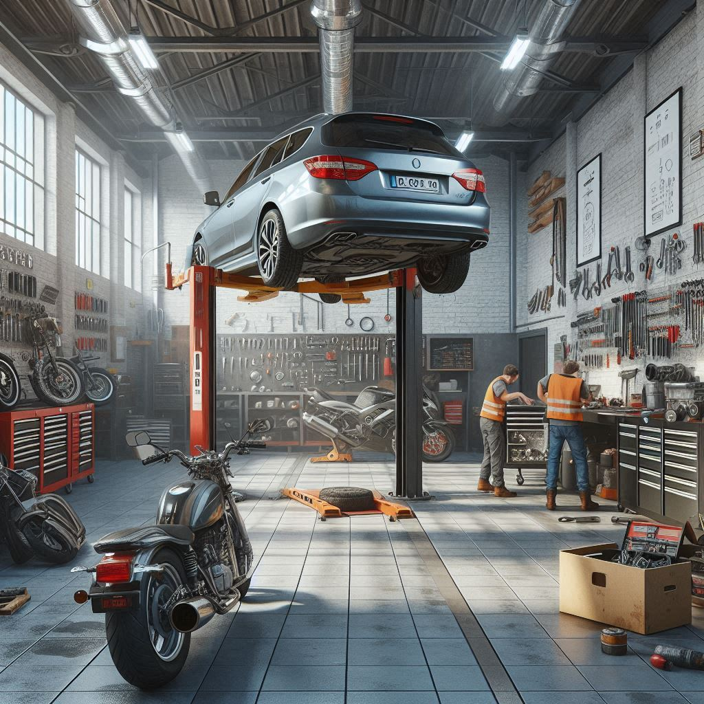
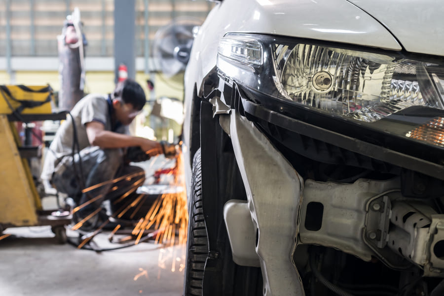
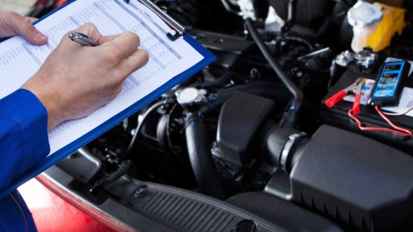
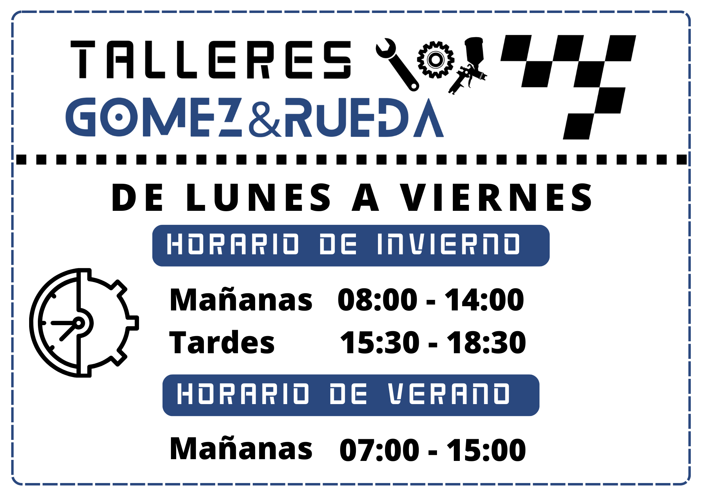

Servicios
- ¡Presupuestos sin compromiso!
- Carrocería: reparamos arañazos, golpes y desperfectos.
- Diagnosis: contamos con maquinaria de diagnosis de vehículos.
- Inyección: inyección de gasolina y diesel; realizamos diagnosis, mantenimiento y reparación.
- Mantenimiento: mantenimiento periódico para evitar la pérdida de garantía oficial del fabricante.
- Frenos.
- Suspensiones
- Mecánica general.
- Mecánica rápida.
- Pre-ITV.
- Tubos de escape.
- Mantenimiento de motos.
- Carrocería y pintura de motos.
- Trabajamos con la mayoría de compañías de seguros
Mecánica General
Revisión, diagnóstico y reparación de sistemas mecánicos y electrónicos del automóvil.
Carrocería
Chapa, pintura y restauración de daños estéticos con acabado profesional.
Pre-ITV
Revisión completa y puesta a punto para superar la inspección técnica con éxito.
Quiénes somos
Somos un taller en Campillos (Málaga), con años de experiencia en mecánica, carrocería y atención personalizada. Nuestro compromiso es ofrecerte un servicio honesto, rápido y de calidad. Jose Antonio Gomez Rueda, Técnico Superior en Automoción, con 8 años de experiencia. Samuel Rueda Andujar Técnico en Carrocería y pintura, con 25 años de experiencia.
Reseñas
Hace 3 años
Excelente trato, plazo de respuesta, precio y calidades.
Samuel y su equipo se interesaron en nuestras necesidades y nos dieron la mejor solución para nosotros.
Gran taller y profesionalidad.
Hace un año
Mejor precio de la zona, me arreglaron la puerta cuando en otro mecánico no lo supieron arreglar.
100% recomendado!
Hace un mes
Llevo mucho llevando mis coches al taller porque estoy encantada...
Jose y Samuel son profesionales, serios y transparentes y se agradece...
Hace un año
Esos chicos como mecánicos son muy buenos y como personas mejores todavía...
Hace 2 años
El mejor taller de la zona rápido y muy profesionales, los recomiendo sin ninguna duda.
Horario
Contacto
Dirección: Calle Agricultores 4, Campillos, Málaga
Teléfono: 635 284 267
Email: talleresruedaautomocion@gmail.com
Horario: Lunes a Viernes 07:00 - 15:00
Instagram: @talleresgr